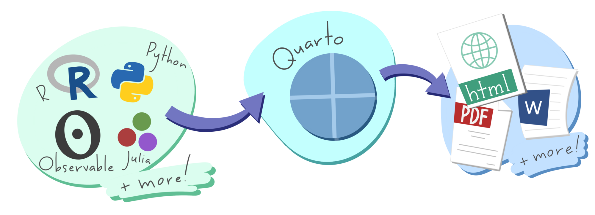
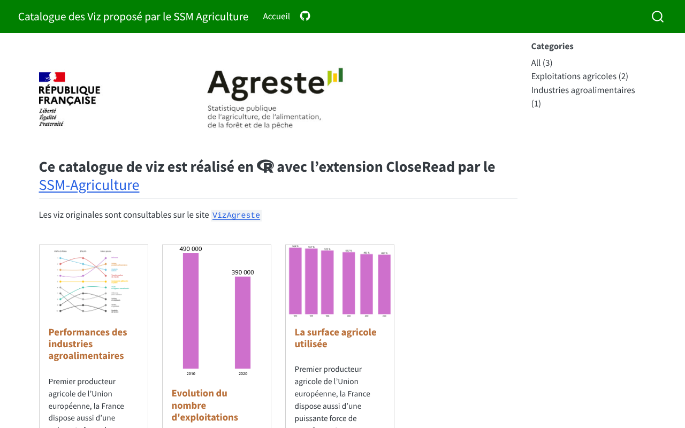
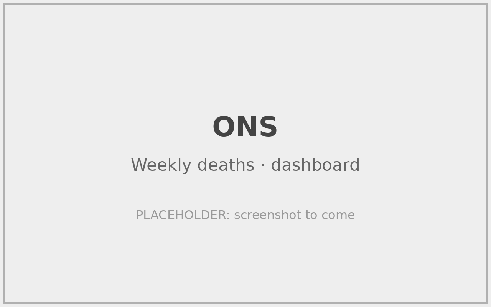
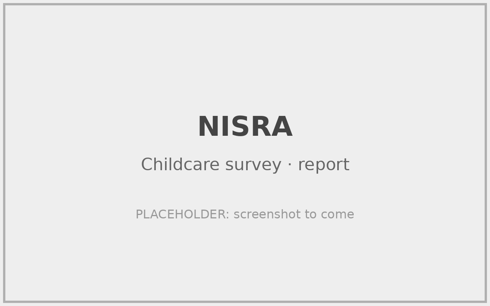
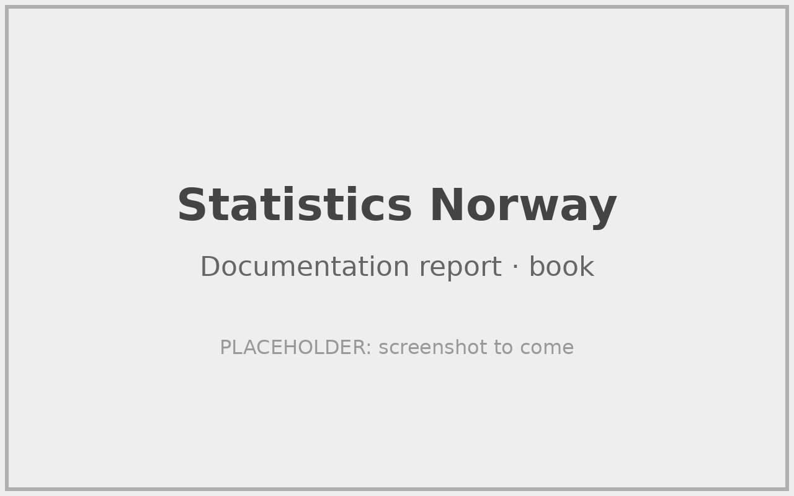
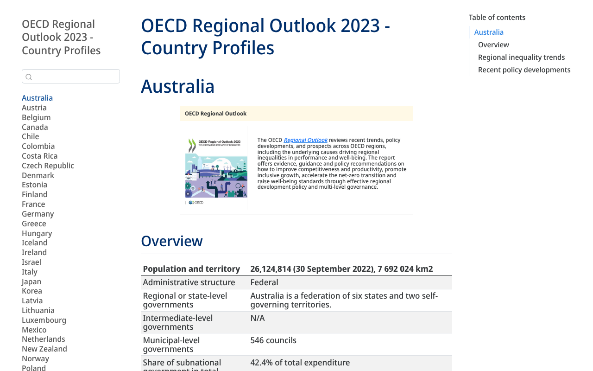

Friends in official statistics:
“Quarto? I haven’t seen it used much in official statistics.”
Every uRos since 2017
Recurring publications, automated Your institute’s look Less manual work
Programs read from 2014 to 2026: 532 items, about 35 publishing talks. Method, code and data: analysis/ in the slides repository.
Every year since 2017, there is a talk here about publishing statistics for your readers. The same needs come back. You want recurring publications, with your institute’s look, and less manual work. Without a pipeline, someone copies the numbers by hand.
Do not explain the method or the counts. The caption says where they are.
Quarto …
…is an open-source, scientific, and technical publishing system

Artwork from “Hello, Quarto” keynote by Julia Lowndes and Mine Çetinkaya-Rundel, presented at RStudio Conference 2022. Illustrated by Allison Horst.
Quarto runs your R code and makes the documents. On the left, your R code. On the right, documents ready to publish. For the rest of the talk, I use one bulletin.
Do not read the definition line. Do not go through the other languages.
Put it in code cells, write the text around them
```{r} library (eurostat)library (ggplot2)<- get_eurostat ("tour_occ_nim" ,filters = list (geo = "EU27_2020" ,unit = "NR" ,nace_r2 = "I551-I553" ,c_resid = "TOTAL" <- na.omit (nights)<- nights[which.max (nights$ time), ]``` ```{r} ggplot (nights, aes (time, values)) + geom_line ()``` A .qmd file is plain text. R code in code cells, your text in Markdown between them.
With Quarto, you put this code in code cells. Between the cells, you write your text, in Markdown. So your analysis and your method note sit next to the code that makes the numbers. And the file stays plain text.
Already published with Quarto
France · Norway · United Kingdom · OECD
Insee: working paper, HTML + PDF

Agreste (SSM Agriculture): dataviz catalog

ONS: weekly deaths data explorer (prototype)

NISRA: Childcare Survey 2024 results (prototype)

Statistics Norway: documentation report with an ISBN

OECD: Regional Outlook 2023 country profiles
Insee, Agreste (France) · ONS, NISRA (United Kingdom, prototypes) · Statistics Norway · OECD
These slides are Quarto too.
Start speaking on the first image, the carousel runs by itself.
Some of you already use Quarto for publications. These are a few public examples. (click) Two of them are still prototypes. (click) And these slides are made with Quarto too.
More of you use it for reports inside your institute. I saw that in this year’s program. But for publications, my friends are right. Not much yet.
Do not name or count the talks from the program. Do not comment on each screenshot.
From R Markdown to Quarto 2
R Markdown
R code and text, to HTML, PDF, Word
Quarto
Same idea, more languages and formats
Quarto 1
The version you install
Quarto 2
Faster, and writing together in the browser
(click) The idea is not new. In 2014, R Markdown already mixed R code and text.
(click) Quarto came in 2022. So in official statistics, it is still young.
(click) Today, it is Quarto 1.
(click) We are working on Quarto 2, because Quarto 1 has limits. It is faster, and it is made for collaboration and review. It is experimental, with no date yet, and it aims to keep your projects working.
So, where to start?
No engine details, no roadmap. Keep them for questions.